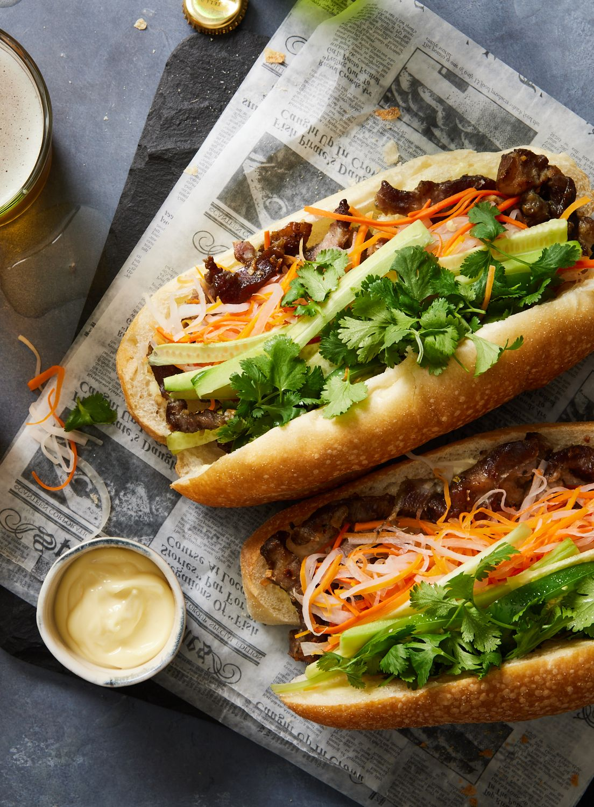

Vietnamese Grilled Pork Sandwich
Bánh mì sandwiches are delicious. I'll never forget my first real bánh mì. I remember thinking to myself, this isn't just one of the best sandwiches I've ever had to eat, but one of the best things, period. Not only do we get amazing contrasts in flavor and texture, but also the temperature difference between the crisp, warm, meat-filled roll, and cool, crunchy vegetables makes this so much fun to eat.

Ingredients
- ¼ cup julienned (2-inch matchsticks) daikon radish
- ¼ cup julienned (2-inch matchsticks) carrots
- 1 tablespoon seasoned rice vinegar
- ¼ cup mayonnaise
- 1 teaspoon hoisin sauce, or to taste
- 1 teaspoon sriracha hot sauce, or more to taste
- 1 crusty French sandwich roll
- 4 ounces cooked pork roast, thinly sliced
- 2 ounces smooth pate, thinly sliced
- 6 thin spears English cucumber, diced
- 6 thin slices jalapeno pepper, or more to taste
- ¼ cup cilantro leaves
Directions
- Preheat the oven to 400 degrees F (200 degrees C). Line a baking sheet with aluminum foil.
- Toss radish and carrot with seasoned rice vinegar in a bowl until well coated. Let sit until veggies become slightly limp, 15 to 20 minutes. Drain and set aside or refrigerate.
- Mix mayonnaise, hoisin sauce, and sriracha in a small bowl.
- Split French roll just enough so you can open it like a book. Pull out some of the bread from the top half to better accommodate the filling if desired.
- Spread the interior surfaces of roll liberally with mayonnaise mixture. Transfer roll, cut-side up, to the prepared baking sheet.
- Bake in the preheated oven until warm and crisp with slightly browned edges, about 7 minutes.
- Place sliced pork, paté, pickled radish and carrot, cucumber, jalapeño, and cilantro leaves in warm roll. Cut in half to serve.
Source: allrecipes.com